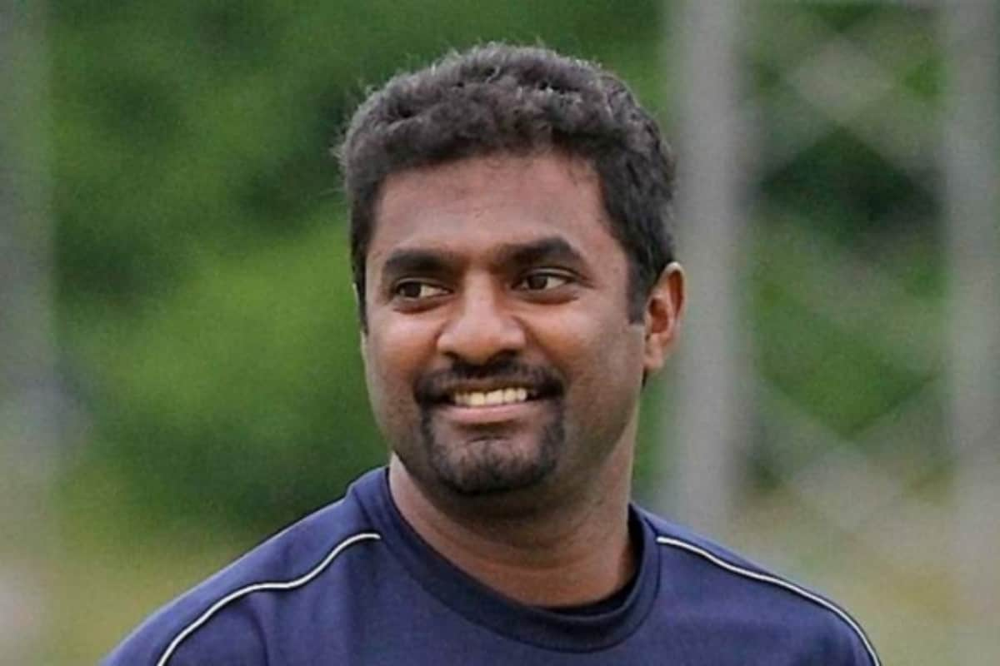
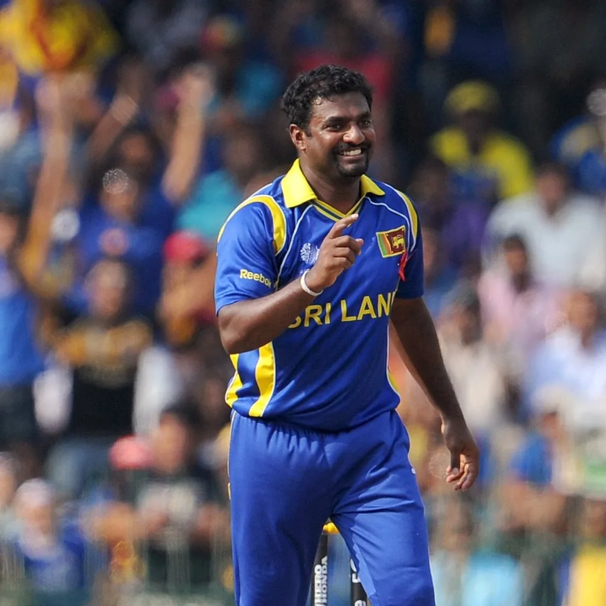

Highest Wicket taker in ODI
Muttiah Muralitharan (Sri Lanka)
534 Wickets in 350 Matches
Economy Rate of 3.93
Best Bowling Performances - 7/30 vs India
Highest Wicket taker in T20I
Tim Southee (New Zealand)
134 off 107 balls
Economy Rate of 8.17
Best Bowling Performances - 5/18 vs Pakistan

Highest Wicket taker in Test
Muttiah Muralitharan (Sri Lanka)
800 wickets off 133 matches
Economy Rate of 2.47
Best Bowling Performances - 16/220

Fastest bowler in the world
Shoaib Akhtar (Pakistan)
161.3 km/hr (100.2 mph)
Right-arm fast Bowler
Cricket World Cup 2003 vs England

Highest number of No Balls bowled in one over
Bert Vance (New Zealand)
17 no balls in one over
77 runs in total
1990 in a game between Wellington and Canterbury!